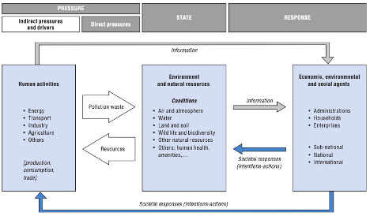
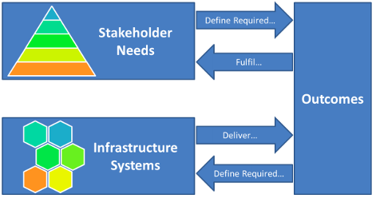
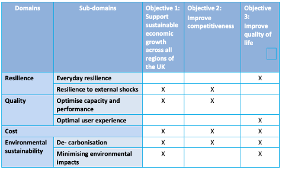
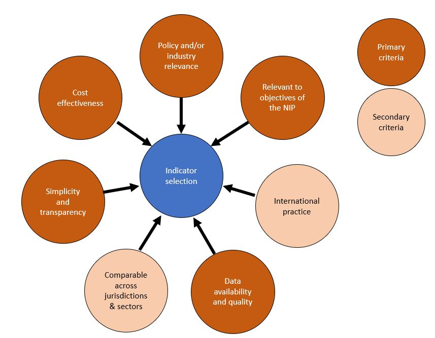
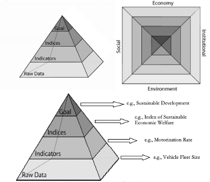

This lecture will review approaches to assessing the performance of infrastructure through targets and indicators. It will consider critiques of common indicator frameworks and assess how we can develop indicators that capture infrastructure performance by reflecting desired outcomes, with a view to aligning them with sustainability criteria.
To describe a range of criteria used to develop infrastructure performance metrics
To list various shortcomings of current infrastructure indicator frameworks.
Infrastructure systems provide a wide range of services to society. However, there is a limit on what we can build or implement, which often necessitates trade-offs between infrastructure service outcomes. To make the most informed decisions when designing new infrastructure, we must fully understand the infrastructure outcomes we seek to deliver, as well as the means by which to evaluate and measure multiple infrastructure objectives across sectors (‘multi-attribute valuation’). In other words, what do we want out of infrastructure, which aspects of infrastructure provision do we most value, and how do we measure them?
When constructed within a robust framework, infrastructure performance indicators or metrics can help decision-makers choose among available options. In an early example, the National Research Council (1996) outlined a framework defining measures of infrastructure performance across four principal dimensions: service delivery, quality of service, regulatory concerns, and community/economic impacts. Notably, environmental indicators were loosely scattered between these broad dimensions rather than forming a performance category in their own right.
This lecture provides an introduction to how indicator frameworks can be conceptualised, built, and improved upon, using the common Pressure-State-Response model as an example. Critiques of traditional metrics used for infrastructure assessment in the UK are provided, to demonstrate drawbacks to traditional approaches. More recent thinking around multi-attribute valuation in infrastructure indicator construction is demonstrated using studies created for governments of the UK and New Zealand. Finally, ways in which researchers have attempted to link infrastructure performance to sustainability will be introduced, which will be discussed in more depth in the next lecture, mini-lecture 5.2.
Several comprehensive frameworks for indicator development and use have been developed; these serve the purpose of stimulating countries to produce information that is more responsive to policy needs and public information requirements.
As an example, (OECD 2003) harmonises international environmental indicators using a Pressure-State-Response model, which aims to highlight cause-effect relationships and the interconnectedness of performance outcomes across environmental, economic, and other spheres.
As shown in Figure 5.1.1, this framework aims to quantify the human activities that affect the underlying state of the environment (pressures), robust measures of the current quality of the environment (states), and societal responses to tackle identified problems such as economic and social policies or changes in awareness or behaviour. The aim is to further strengthen countries’ capacity to monitor and assess environmental conditions and trends so as to increase their accountability and to evaluate how well they are satisfying both domestic objectives and international commitments (OECD 2003). Three basic criteria for indicator selection used in this framework are: policy relevance and utility for users, analytical soundness, and measurability.
While this framework can be applied in principle to many areas, it has been adapted to evaluate sustainability across a range of infrastructure types, including energy (Li and Li 2019), water (Kaur, Hewage, and Sadiq 2020), and green infrastructure (Spanò et al. 2017). It has also been specifically adapted to impose a structure on infrastructure indicators, by reflecting a) external forces that affect the welfare delivered by infrastructure (pressures); b) the contribution of infrastructure to societal welfare (state); and c) public and private responses to changes in each of these (Beca 2013). This will be discussed later on.

Figure 5.1.1: The OECD’s Pressure-State-Response model for environmental indicators (OECD 2003)
Indicator frameworks that fail to inform strategic decision-making are of limited use. A critique of the indicator framework used to assess infrastructure performance in the UK (ICIF 2015) suggested next steps to develop metrics that better serve the needs of the country’s long-term strategic infrastructure vision. This provides many insights on shortcomings related to the structure and selection of indicators for broad themes such as infrastructure.
As reported annually in the UK’s National Infrastructure Plan, infrastructure performance indicators covered five sectors, relating to the following areas:
Specific critiques include the following:
It is unclear what the indicators’ purpose is, and how they are meant to inform the actions of any stakeholders
There is no clear link between the data and the direct experienced outcomes of those relying on the infrastructure systems they measure (societal, environmental and economic)
National-level scope means underperforming regions requiring attention could be masked by those performing well
Data aggregation masks volatility and variance in other dimensions
Overlooking the complex relationships in the system to produce overly-simplified indicators creates a risk of perverse incentives
A lack of articulation of what the infrastructure vision is or what the future expected requirements are, hampering understanding of whether performance is heading towards or away from these requirements.
A proposed framework for indicators is shown in Figure 5.1.2, highlighting the importance of outcomes defined by stakeholder needs and delivered by infrastructure systems, and the interplay between them.

Figure 5.1.2: Assessing performance of infrastructure through the delivery of outcomes, according to (ICIF 2015)
These critiques highlight the challenge for researchers and policymakers to provide a more nuanced, robust and convincing assessment of infrastructure system performance with respect to multiple attributes. This section provides examples of how national governments can improve their infrastructure assessment frameworks.
Acknowledging the drawbacks listed in the previous section, a recent assessment of infrastructure indicators for the UK’s National Infrastructure Commission highlighted the need for a logical framework for indicators that could better inform infrastructure systems planning (JBA 2017). These were organised around four major domains, linked to overarching objectives aligned with the country’s vision for national infrastructure (Figure 5.1.3). To populate the framework, a shortlist of performance measures could be narrowed down using a set of defined criteria.

Figure 5.1.3: Proposed objectives, domains and sub-domains for UK infrastructure performance indicators (JBA 2017)
Similarly, the National Infrastructure Unit in the New Zealand Treasury has aimed to reshape infrastructure indicators to enable a) better use of existing infrastructure; and b) better allocation of new investment (Figure 5.1.4). An analysis based on the Pressure-State-Response framework demonstrates foundations for a comprehensive set of performance indicators at the national level, distinguishing between levels of infrastructure activity (quantity) and measures such as productivity and efficiency (quality), which are often confused. The indicators are intended to capture the overall performance of the country’s infrastructure, highlighting key trends and patterns. Of particular interest are the critical determinants of infrastructure performance, with a preference for simple indicators, but with sufficient depth to tell a meaningful story (Beca 2013).

Figure 5.1.4: Criteria for selecting infrastructure performance indicators according to (adapted from Beca 2013)
Although in practice it will not be possible to satisfy all criteria for robust indicator selection, these examples represent the adoption of common methods to develop infrastructure indicators that will be internationally comparable while addressing the intricacies and context-specific challenges of each country.
In traditional methods such as cost-benefit analysis, infrastructure performance has generally emphasised economic considerations (EU 2014), over the social and environmental ‘pillars of sustainability.’ However, in some cases, environmental or user quality criteria are prioritised over economic considerations, with economic criteria applied in a later implementation phase, for example to assess the financial feasibility of identified projects, e.g. Schmale, Schneidemesser, and Dörrie (2015). On the other hand, some studies have suggested that a robust assessment process based on cost considerations can simultaneously maximise security and sustainability objectives as part of an efficient generation portfolio (Awerbuch 2006).
However, many studies that focus on the sustainability aspect of infrastructure assessment focus on a single sector such as transport (Zegras 2006; Jeon, Amekudzi, and Guensler 2013; IAEA 2021) (Figure 5.1.5), or a particular outcome attribute such as environmental sustainability (Shen, Wu, and Zhang 2011; Pakzad, Osmond, and Corkery 2017). Some use specialised methods such as multi-attribute utility theory to address uncertainty in infrastructure planning, by outlining an objectives hierarchy and aggregating marginal utilities and weights to facilitate decision-making between stakeholder preferences (Scholten et al. 2015).
Nevertheless, these approaches have laid the groundwork for continued efforts to integrate infrastructure assessment with a more comprehensive definition of sustainability, which is addressed in the next lecture (mini-lecture 5.2). Understanding how performance measures and metrics can be designed to use existing datasets to inform a broader range of attributes will continue to pose a challenge for infrastructure planners.

Figure 5.1.5: The information hierarchy through the sustainable indicator prism for the transport sector (Zegras 2006)
This lecture has introduced the role of performance indicators in framing infrastructure assessment. It has provided an example of a common indicator framework and how it has been applied to infrastructure decision-making. Key criteria used for indicator selection are proposed, including policy relevance, analytical soundness, and measurability. Main drawbacks of traditional approaches are suggested, including simplified aggregation, lack of alignment with a national infrastructure vision, and a need to reflect the range of attributes desired by users. While there has been a shift toward incorporating sustainability dimensions in infrastructure assessment, many studies have focused on a single sector or outcome attribute. This calls for a need to think about sustainable infrastructure assessment from a cross-sectoral perspective.